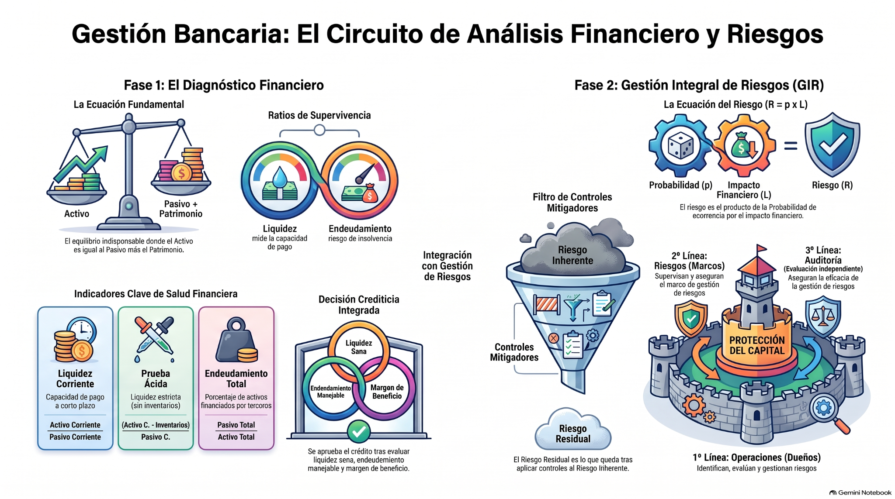

Análisis de Estados Financieros y Gestión Integral de Riesgos
De la radiografía financiera a la decisión y al control del riesgo
Calcula, interpreta y somete a estrés los principales indicadores de Panadería Horizonte. Después convierte las señales financieras en una evaluación de riesgo con controles y evidencia.
Balance · resultados · caja.
Calcular no basta: hay que interpretar.
¿Qué cambia si cambia el contexto?
Probabilidad · impacto · controles.
Una empresa puede mostrar utilidades altas y aun así tener poco efectivo y obligaciones próximas. ¿Un solo número favorable debería decidir un crédito?
Cuatro tarjetas antes de entrar al laboratorio
Concepto primero, apoyo contextual y luego pregunta. Las alternativas se reordenan en cada nueva ejecución sin patrón fijo.
Radiografía financiera → contexto → escenario → riesgo
El laboratorio es el corazón de la sesión. Un escenario es suficiente para completar la misión “¿Qué pasaría si...?”; los otros quedan disponibles para profundizar.
Cinco preguntas para integrar cálculo, contexto y riesgo
Las alternativas se barajan en cada ejecución. Si fallas el primer intento, tendrás un segundo; tras un segundo error se activa la Ruta correcta.
Todo el material, sin salir del programa
PPT, artículo, Excel, videos, infografía integradora y audio. El laboratorio reproduce dentro del programa la lógica del Excel real.
Medir bien no basta si interpretamos mal
Los estados financieros muestran posición, desempeño y caja. Los ratios convierten cifras en señales; los escenarios revelan sensibilidad; y la gestión integral del riesgo obliga a preguntar qué puede salir mal, qué controles existen y qué exposición permanece.
Balance, resultados y flujo responden preguntas distintas y complementarias.
La misma cifra puede significar algo distinto según composición, sector, momento y calidad de la información.
Ventas, inventarios o costo financiero pueden deteriorar indicadores diferentes aun cuando otros permanezcan iguales.
El riesgo residual depende de controles ejecutados, responsables y con evidencia; no solo de controles escritos.

Crecer el negocio y proteger el capital no son objetivos opuestos. La administración bancaria busca una combinación sostenible entre rentabilidad, liquidez, capacidad de pago y riesgo aceptable. Por eso el análisis termina cuando podemos explicar no solo cuánto da un ratio, sino qué significa, qué podría estar ocultando y qué debemos controlar antes de decidir.